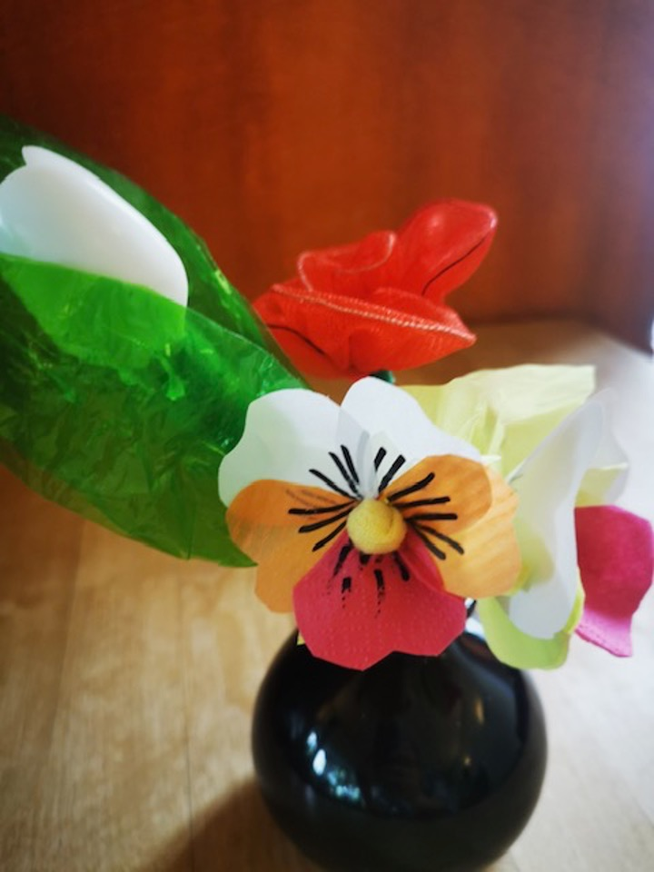

Donnerstag 14. August
Blumen basteln aus Kreppband
Unter Anleitung entstehen aus farbigem Kreppband Blumen verschiedenster Art – ideal zum Verschenken oder Dekorieren.
bei Talente teilen
Ein Ort der Begegnung und des LernensMit Talente teilen haben wir einen Ort geschaffen, an dem Menschen zusammenkommen, um Wissen, Fähigkeiten und Erfahrungen auszutauschen. Unser Wunsch ist es, einen warmen, einladenden Ort zu schaffen, an dem jeder willkommen ist – unabhängig von Alter, Konfession oder Hintergrund. Wir freuen uns über jeden, der sich mit einem Talent einbringen möchte oder einfach nur als Gast vorbeikommt. Jeder Mensch bereichert unsere Gemeinschaft.
Bei einer Tasse Kaffee oder Tee bieten wir:
Blumen basteln aus Kreppband
Unter Anleitung entstehen aus farbigem Kreppband Blumen verschiedenster Art – ideal zum Verschenken oder Dekorieren.
Auch wenn mal kein besonderes Programm geplant ist – wir treffen uns jeden Donnerstag (ausgenommen Feiertage) von 15.00 bis 17.00 Uhr bei Kaffee, Tee und netten Gesprächen.
Wer Anregungen oder eigene Talente hat und diese einbringen möchte,
kann uns gerne ansprechen oder eine E-Mail an talente.teilen(at)gmx.de schicken
Wir kommen jeden Donnerstag von 15.00 bis 17..00 Uhr
im Gemeindesaal der Evangelischen Dornbuschgemeinde zusammen
Zugang über das Gemeindezentrum
Wir sind Stephanie und Jörg und sind die Initiatoren des Projektes Talente teilen.
Wir freuen uns auf einen gemeinsamen Nachmittag!